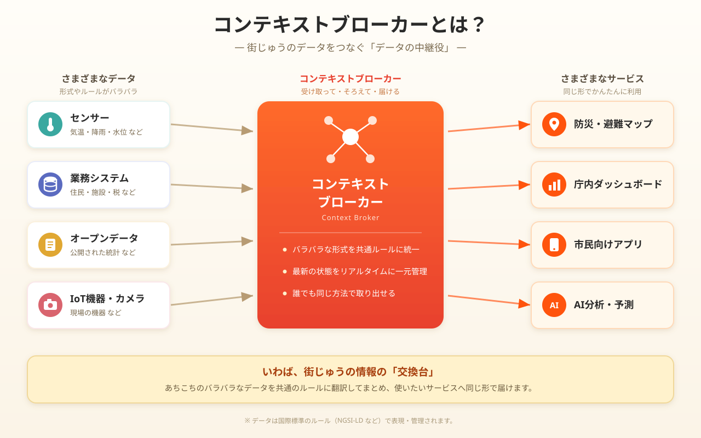

FIWARE Orion 互換の
フルマネージド
Context Broker サービス
NGSIv2 ＋ NGSI-LD デュアルプロトコル／AI・地理空間ネイティブ／エンタープライズ認証認可／運用レス


GeonicDB が実現する近未来のスマートシティ
街のいまを「状態の集合体」として束ねる、スマートシティのための都市 OS。
国際標準に準拠した Context Broker
スマートシティ・IoT のコンテキスト情報を、相互運用可能な形で表現・管理する国際標準。GeonicDB は NGSI-LD と FIWARE NGSIv2 を 1 エンジンで両対応します。
むずかしいことや面倒なことはAIにおまかせ
数字で示す、エンタープライズ品質
（Statements）
（テスト:実装 行数比）
シナリオ数
CI 品質ゲート
本体ソース 93,798 行 / ユニットテスト 158,637 行。CI = lint · build · SAM 検証 · ユニット · E2E · カバレッジ · Docker。
ブローカー単体でゼロトラスト相当の認可
- 5 種の認証 — JWT・API Key・OAuth 2.0・OIDC 外部 IdP・DPoP（RFC 9449）
- XACML 3.0 単一レイヤ — 5 ロール × 属性ベースのきめ細かいポリシー
- per-tenant IP 制限・監査ログ・トークン失効
- PEP プロキシ（Wilma 等）を別途立てる必要がない
Policy: owner-only-access
target: entity.owner == ${subject.userId}
rules:
- Permit read if owner
- Permit write if owner
- Deny * otherwise
# 所有者のみがアクセス可能機能の充実度で大きく差がつく
| 機能 | GeonicDB | FIWARE Orion |
|---|---|---|
| NGSIv2 / NGSI-LD | ◎ 両対応（1 エンジン） | ○ 製品が分離 |
| Temporal API | ◎ フル | △ 限定的 |
| WebSocket / ベクトルタイル / 空間 ID | ◎ | ✕ |
| 組込み JWT / RBAC / XACML | ◎ | ✕ プロキシ別途 |
| 外部 OIDC / IP 制限 / DPoP | ◎ | ✕ |
| DCAT-AP / CKAN / CADDE | ◎ | ✕ |
| スケーリング | オートスケール | 手動 |
出典: docs/FIWARE_ORION_COMPARISON.md。Orion はオンプレ／マルチクラウド／FIWARE スタック実績で優位。
場所でデータを絞り込む
あらゆる時系列データを過去にさかのぼって取得
GeonicDB はすべての変化を履歴として保持。Temporal API で「いつ・どの瞬間の状態だったか」を期間指定で問い合わせられます。下のスライダーで時刻をさかのぼれます。
条件がそろえば、あとは自動。
ReactiveCore Rules は GeonicDB 内蔵のルールエンジン。エンティティの変化を監視し、条件に一致すると通知・Webhook・属性更新などのアクションを自動実行します。
外部のルールエンジンやワークフロー基盤を別途構築せず、ブローカー内で完結。
データの変化をリアルタイムに通知
GeonicDB はサブスクリプション機能を内蔵。エンティティの作成・更新・削除を購読しておくと、変化した瞬間に WebSocket で全クライアントへ即時プッシュ、または Webhook で外部システムへ通知します。ポーリングは不要です。
GeonicDB で一番試したい機能は？
こんな現場にフィットする
スマートシティ / 自治体
交通・駐車・環境モニタリング。空間 ID・CADDE で日本市場に適合。
AI 駆動 IoT 分析
MCP 経由でエージェントが自律的にデータ投入・検索。自動バリデーション。
オープンデータ公開
DCAT-AP / CKAN ハーベスタ連携でポータルへ自動収集。
マルチテナント SaaS
XACML・IP 制限・JWT RBAC で PEP プロキシ不要。
地図・位置情報アプリ
ベクトルタイル直結でカスタム描画コード不要。
LLM アシスタント付き Web
SDK 型定義 + MCP で Claude / Cursor から開発。
都市 OS を、
フルマネージドサービスで。
運用レス・自動スケール・高可用。スマートシティと IoT の次の基盤を、いますぐ。
Geolonia, Inc. · GeonicDB Context Broker